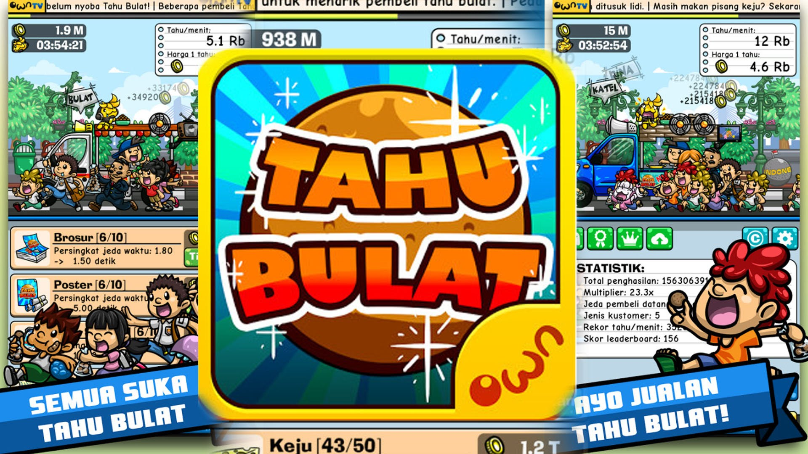
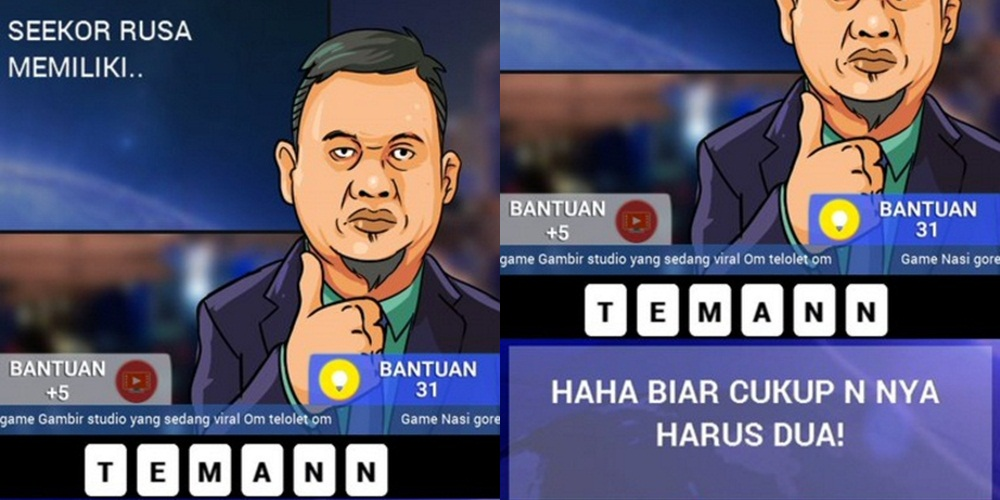

3 Game Buatan Anak Bangsa
1. Tahu Bulat

Game besutan Developer OWN Games ini pernah menjadi populer loh. Game bertemakan menjadi penjual tahu bulat yang fenomenal pada masanya ini dibilang cukup mudah di mainkan semua umur.
Dengan cara yang cukup simpel tapi butuh kesabaran dan ketelatenan. Yaitu, masak tahu bulat, jual tahu bulat, menginvestasikan penjualan supaya bisnis lebih berkembang, serta kembangkan resep. Terakhir Kamu tap-tap deh hp Kamu biar dapat pelanggan lebih cepat. By the way, Gua dulu sampai pernah ketagihan main game ini.
2.TTS Lontong

Game Kali ini Berupa Game TTS,Tetapi game TTS Lontong ini tidak sama seperti Game TTS yang lain. Pasalkan Kalimat TTS dalam Game ini bukan berarti Teka Teki Silang Melainkan Teka Teki Sulit, Letak kesulitanya adalah kita harus berfikir Kreatif di Luar Nalar.
Game TTS Lontong ini Telah Di pasang oleh Lebih dari 5 juta orang, meskipun betajuk teka teki sulit game ini sangat di gemari untuk mengisi waktu luang